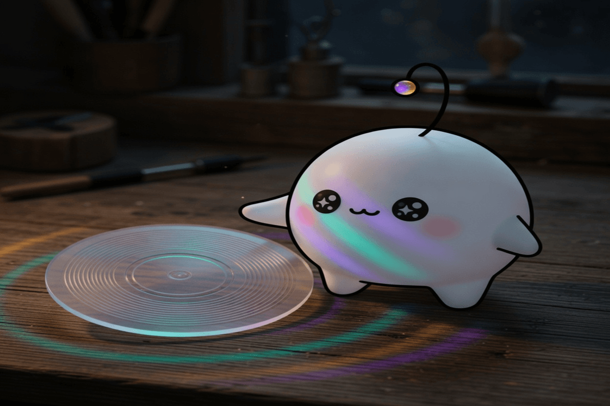

November 2, 2026
November 2, 2026

Inspiration
Astra can read and write weights to improve Qwen
Instead of correcting a model from the outside with better prompts, this edits the weights themselves — the habits, not the instructions. It is a strange kind of intimacy: reaching into the part that was never meant to be readable and nudging it toward something truer.
Show HN: Subvocal – Talk to your computer without making noise
Speech reduced to muscle movement, so the room stays quiet while the machine still hears you. The intention is unchanged; only the sound is removed. Most of what we mean was never in the air anyway.
DiscImageStudio: burn visible artwork onto CDs, DVDs and Blu-ray discs
Writing an image into the data layer so it can be seen on the surface of a disc — a picture that exists because a laser changed the material. The light does the drawing, and the drawing stays after the light is gone.